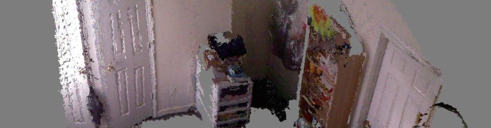
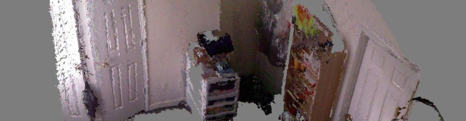

Research
Various previous projects
- Robot exploration under human supervision
- Path Planning for Multiple Moving Targets
- 3D Reconstruction and Mapping (class projects)
Path Planning for Redundant Robotic Arms
| Redundancy is a desired feature in robotic arms. Why? Well, if you have more degrees of freedom (DOF) than you need allows more than one possible way to accomplish a manipulation task. However, this flexibility also arises questions: Which of all alternatives should we choose? Is it possible to list all the possibilities so we can choose "the best"? I propose a determistic method to express these different alternatives by means of discretizing the nullspace of the arm and searching through it. By using diverse heuristic functions, we evaluate the configurations and choose the best depending on our requirements. |
Robot Locomotion
|
| Walking is one of the activities that humans do everyday without thinking about it. However for robots the story is completely different. There are in general 2 types of approaches for humanoid walking: Methods based on ZMP, which strongly depends on having a good model of the robot and approaches based on feedback controllers. Currently I am working in a simple approach to generate smooth gaits that allow a natural, human-like walk by combining an accurate (read "reasonably good") mass model with an online controller. The videos show some preliminary (failing) tests with the torso and lower limbs of the robot trying to get into balance after falling from a short height. The video below shows the test of the swing movement for one of the feet of the simulated robot. |
Searching for Multiple Moving Targets
| Search is a basic problem in Artificial Intelligence. . The most common case, in which an agents moves towards an static target in an enviroment (static or dynamic) has been analyzed extensively; however, not much work has been done in the following setup: Having one agent and multiple moving targets, what is the most effective plan to reach all of them in the smallest amount of time? We analyze this problem by making use of multiple instances of GAA* (proposed by Koenig), an algorithm based on A* to solve this problem in an efficient, yet simple way. The video shows a (initially) unknown maze and an agent starting at the bottom right corner. Red moving dots are the moving targets. As the agent moves, it builds a discrete map of the environment (discovered obstacles are shown in magenta) and keeps updating its initial plan until it reaches all the targets. |
Dynamic Signaling of Robot Teams under Human Supervision
| How many robots can a human operator reasonably supervise? While many people agree that the number depends on the task to be performed, it is natural that the greater the number of robots the more attention the human supervisor requires. In this project, we implement a mock environment in which 2 robots search for a red object. Once one of them finds it, the robot will approach it to verify the object's identity and then it will fire a visual dynamic signal (moving back and forth) so it catches the supervisor's attention. Simulation made with the Gazebo simulator coupled with ROS to access simulated Kinect and odometry data. |
3D Reconstruction and Mapping: Various projects
|
|
In this class we explored diverse ways to map a 3D environment by using diverse sensors (such as a Kinect or a standard camera). In this particular project, we built a topological map of our Lab office environment by using RATSLAM a biologically inspired SLAM algorithm. The results are shown in the video at the left. As it can be seen, the algorithm correctly detects closed-loops and uses this information to correct its measurements. The input video used to produce the results is shown below. |